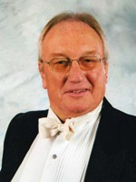

John Sutton
John Sutton (Musical Director) began his musical career as a double bass player with the National Youth Orchestra. He gained a scholarship to the Royal College of Music, where he studied singing with Mark Raphael, bass with Eugene Cruft and conducting with Sir Adrian Boult. As a soloist he has performed extensively throughout the UK and Europe, and also with the BBC Singers, but now concentrates on his conducting and free-lance bass playing in which latter capacity he can be heard on Sunday lunchtime at the Balmer Lawn Hotel. He conducts two choral societies, an operatic society in the southwest London area, and Compton and Shawford Festival Choir in Winchester. Descriptions of his recent performances have included: "outstanding success" "great fun!" "deeply moving" "truly inspirational". All of which he enjoys enormously! When not engaged in music-making he can be found on the golf course!
|

|
|